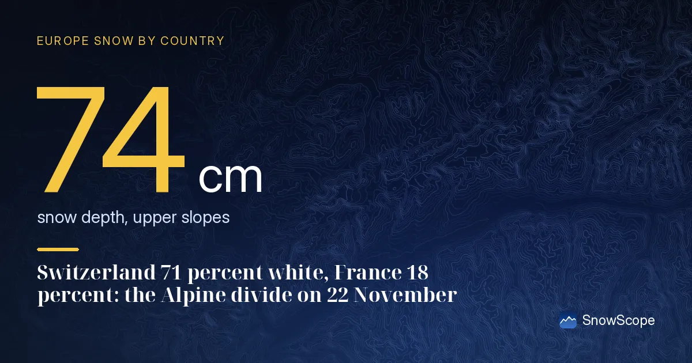
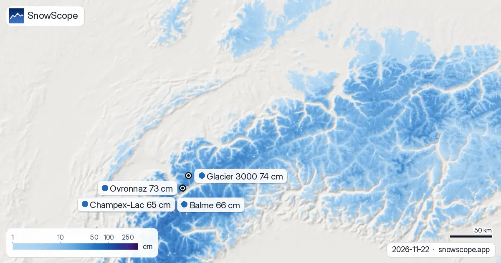

Svizzera 71 percento bianca, Francia 18 percento: la divisione alpina al 22 novembre
Le montagne svizzere sono vastamente più bianche di quelle francesi nello stesso giorno: 71 percento di copertura nevosa contro 18 percento. Questo divario riflette come le tempeste recenti hanno trattato diversamente i due paesi, con le stazioni svizzere che mantengono notevolmente più acqua sotto forma di neve fresca.
Le previsioni neve in tempo reale per Glacier 3000 nell'app SnowScopeAltezza neve, allerte powder e mappa 3D, gratis.
Perché la Svizzera è così bianca
La differenza è impressionante. Al 22 novembre, il nostro modello mostra la Svizzera con neve su 71 percento dell'area mappata, mentre la Francia si attesta al 18 percento. Non è casuale. Le tempeste atlantiche che hanno attraversato le Alpi nella scorsa settimana hanno depositato molta più neve sul versante svizzero, specialmente sulle Alpi Vallesi e sull'Oberland bernese.
La ragione è in parte geografica e in parte legata ai tempi. Le montagne svizzere catturano l'umidità per prime; i versanti francesi spesso affrontano aria più secca. Negli ultimi 72 ore, le Alpi Vallesi hanno ricevuto 166 cm di neve—una ricarica drammatica per una catena montuosa. L'Oberland bernese ha registrato 112 cm. Il leader francese, La Grave, ha registrato 171 cm nello stesso periodo, ma è un punto, non una regione. Su tutta la Francia, la copertura bianca rimane irregolare e bassa.
Da un punto di vista idrologico, questo ha importanza. La neve è acqua immagazzinata. La Svizzera sta costruendo una riserva invernale molto più velocemente della Francia a inizio novembre. Quest'acqua alimenterà fiumi e bacini durante la primavera e l'estate.
| Country | White | Deepest resort | Next 7 days |
|---|---|---|---|
| Svizzera | 71 % | Glacier 3000 | 49 cm |
| Austria | 60 % | Stubaier Gletscher | 25 cm |
| Francia | 18 % | La Grave | 38 cm |

Vicini: inizi a contrasto
L'Austria, vicino orientale della Svizzera, si colloca tra i due estremi con 60 percento di copertura bianca. Il suo leader, Stubaier Gletscher, mantiene 67 cm di neve fresca in 72 ore—solido ma dietro ai migliori resort svizzeri. L'Austria affronta meno tempeste in arrivo nei prossimi 7 giorni (25 cm di previsione) rispetto ai 49 cm della Svizzera e ai 38 cm della Francia.
La Francia è la storia del potenziale senza ancora abbastanza profondità. La Grave, famosa per il terreno ripido, ha catturato 171 cm in tre giorni—impressionante per una misurazione puntuale. Ma le Alpi francesi più ampie rimangono sottili. Questo squilibrio significa che gli sciatori in Francia stanno cercando aree di buona neve piuttosto che sciarvi dentro ovunque.

Dove l'acqua svizzera è più profonda
Glacier 3000 guida con 74 cm nel suo punto di misurazione e 108 cm di neve fresca in 72 ore. La sua vetta si trova a 2.931 m, abbastanza alta da mantenere quello che ha catturato. Zermatt, a 3.872 m, è il resort più alto della nostra lista; mantiene 65 cm ma ha accumulato 74 cm in tre giorni e beneficia dell'altitudine del ghiacciaio dove la neve persiste più a lungo.
Nelle Alpi Vallesi nel complesso, il manto nevoso è più spesso sopra i 2.500 m, dove il nostro modello stima una profondità media di 34 cm. Anche la fascia 2.000-2.500 m registra una media di 21 cm. Questa stratificazione significa che le montagne stanno immagazzinando acqua in modo efficiente in quota, dove non si scioglierà rapidamente.
Cosa sta arrivando
I prossimi tre giorni aggiungeranno altra acqua alle montagne svizzere. Fino a 38 cm sono previsti su tutto il paese. Domani, 23 novembre, sembra essere il giorno più nevoso con fino a 28 cm attesi. Questo è il primo giorno di neve significativa nella nostra previsione.
Nei prossimi sette giorni, il totale delle previsioni raggiunge 49 cm. Questo spingerà la copertura bianca più in alto e approfondirà ulteriormente il manto nevoso, specialmente sopra i 1.500 m dove la copertura completa è già stabilita. La Francia vedrà 38 cm nello stesso periodo—recuperando leggermente, ma da una base molto più sottile.
Il trend: ricarica rapida
Una settimana fa, la Svizzera aveva neve su soli 16.800 chilometri quadrati. Oggi copre 22.110 chilometri quadrati—un aumento di 5.310 chilometri quadrati in sette giorni. È un'espansione del 32 percento dell'area bianca. Il trend è in salita ripida dal 19 novembre, con brevi cali ma una chiara pendenza verso l'alto.
Questa velocità di ricarica è tipica per le tempeste di inizio stagione nelle Alpi. Le montagne stanno assorbendo acqua rapidamente. Dal 16 novembre a oggi, l'area nevosa è cresciuta di 2.370 chilometri quadrati in sole 24 ore, mostrando come le condizioni possono cambiare rapidamente quando aria satura di umidità si muove.
L'altitudine conta: linea della neve a 1.100 m
Il nostro modello colloca la linea della neve a 1.100 m oggi. Ciò significa che sotto questa altezza, la neve è scarsa: solo 16 percento di copertura bianca nella fascia 500-1.000 m. Tra 1.000 e 1.500 m, il 77 percento è bianco, anche se la profondità media è solo 4 cm—sottile e vulnerabile allo scioglimento o al vento. Sopra i 1.500 m, la copertura completa tiene, con profondità da 15 cm a 34 cm a seconda dell'altitudine.
Per i resort sciistici più bassi di 1.500 m, l'affidabilità di inizio stagione dipende dall'ombra, dall'altitudine e dalle precipitazioni continue. I resort sopra i 2.000 m stanno costruendo una base solida che persisterà.
Consigli per sciatori
- Se scii in Svizzera, concentrati sui resort sopra i 1.500 m dove la neve è continua. Glacier 3000 e Zermatt hanno profondità e altitudine a loro favore.
- Guarda le prossime 48 ore: 28 cm sono previsti per il 23 novembre. Questo riempirà le aree poco profonde e rafforzerà la base ovunque.
- In Francia, cerca terreno ad alta quota (La Grave, i settori più alti di Chamonix) dove la neve fresca si sta accumulando. I versanti inferiori potrebbero ancora essere sottili.
- Consulta il bollettino valanghivo ufficiale se vai fuori pista; neve fresca e pendii ripidi sono una combinazione di pericolo.
- Verifica l'esatta altitudine e l'esposizione del tuo resort scelto prima di partire. L'inizio stagione significa che esposizione e altitudine fanno la differenza tra buona neve e roccia.
Su questi numeri
Le altezze neve delle località sono la neve più alta sui pendii superiori secondo il modello neve di SnowScope (circa 1 km, calcolo del 22 novembre); sono stime per un'area, non una misura in un punto. I valori delle stazioni sono misure alla data indicata. Le previsioni possono cambiare. Leggi sempre il bollettino valanghe ufficiale prima del fuoripista.
Cita questo articolo
Per ricerca, didattica o stampa: numeri e grafici sono liberamente riutilizzabili con licenza CC BY 4.0 citando così.
SnowScope (2026), Svizzera 71 percento bianca, Francia 18 percento: la divisione alpina al 22 novembre, https://snowscope.app/blog/it/2026/11/switzerland-snow-vs-neighbours-22-november-2026.html, consultato il 2026-11-22
SnowScope (Atlas Labs). (2026, November 22). Svizzera 71 percento bianca, Francia 18 percento: la divisione alpina al 22 novembre. SnowScope snow reports. https://snowscope.app/blog/it/2026/11/switzerland-snow-vs-neighbours-22-november-2026.html
BibTeX
@misc{snowscope2026switzerlandsnowvsneighbo,
author = {{SnowScope (Atlas Labs)}},
title = {Svizzera 71 percento bianca, Francia 18 percento: la divisione alpina al 22 novembre},
year = {2026},
month = nov,
howpublished = {\url{https://snowscope.app/blog/it/2026/11/switzerland-snow-vs-neighbours-22-november-2026.html}},
note = {Published 2026-11-22 11:38 UTC; accessed 2026-11-22}
}· CC BY 4.0 · Metodi, dati e strumenti →
Glacier 3000: neve e temperatura per quota, quest'inverno vs lo scorso (strumenti) →
Segui Glacier 3000
Gratis: un messaggio quando arriva la neve e il meteo ogni mattina.